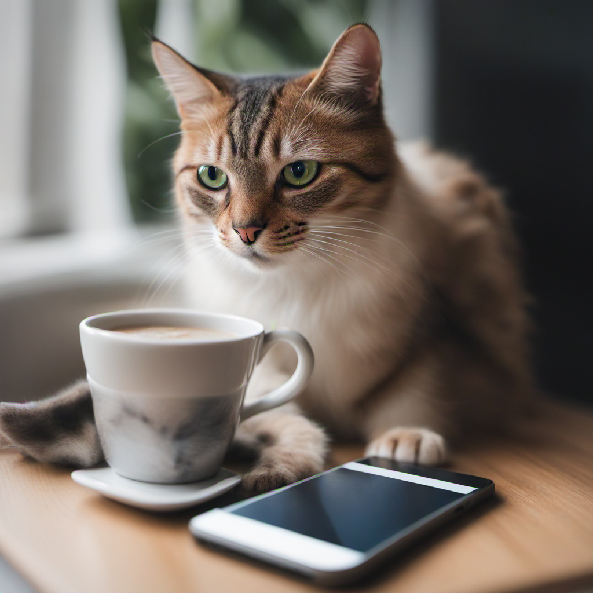

A cute blog about cats..
You might be wondering who's behind the soulful outpouring of words you find here. Allow me to introduce myself. My name is Whiskers, err... William, and I am a full-time writer and part-time dreamer.
Having lived in the bustling city for as long as I can remember, I've developed a keen interest in exploring the human world and its intriguing ways. Often, I find myself in the midst of trees, contemplating life and its paradoxes, or simply finding solace in the arms of literature.
Here are a few activities I absolutely adore:
There you have it, just a human trying to navigate life. I hope you stick around and enjoy my musings. Do remember, we all have our own unique quirks, even if mine occasionally seem a little... cat-like.
